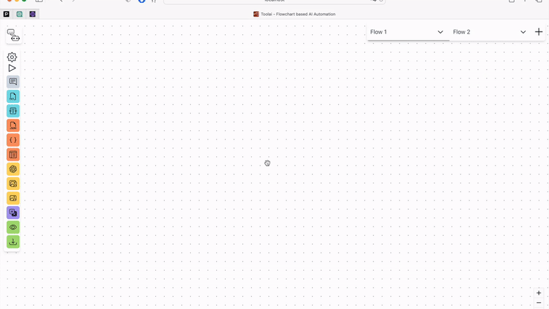
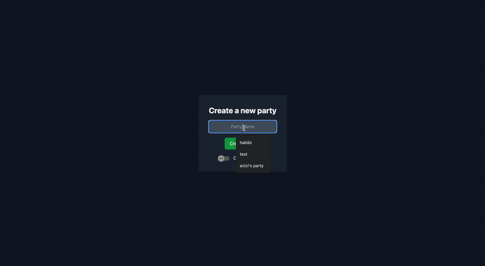
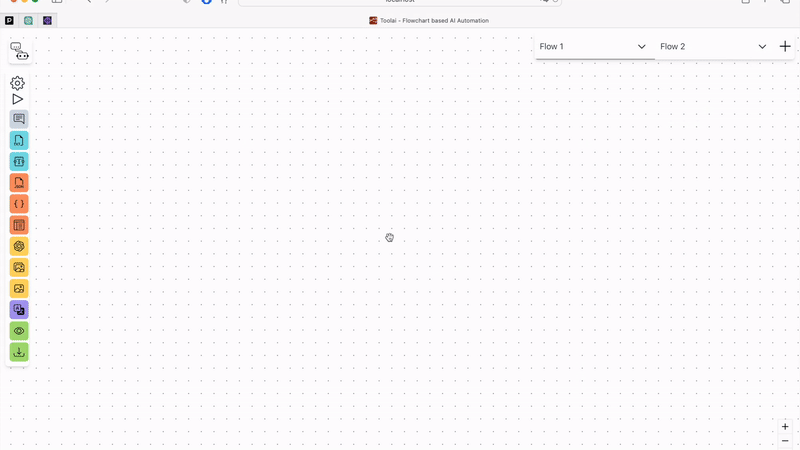
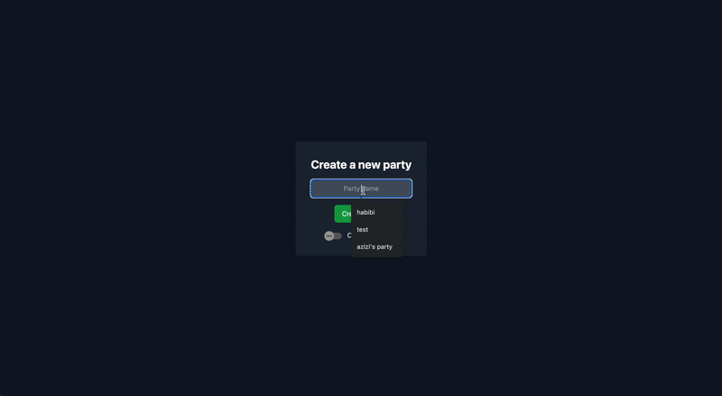

About Me. . .
Crafting Applications with Data-Driven Full-Stack Development
Hello, welcome to my profile page! You are reading the introduction of a Software Engineer who possesses a diverse skill set that spans a wide range of technologies. I am adept at developing full-stack applications using a modern stack and implementing robust infrastructure. My solutions are not only driven by the latest industry practices but also draw inspiration from Data Science methodologies, incorporating elements such as Big Data Wrangling, Analytics, and Machine Learning.
I am passionate about building user-centric apps that provide genuine value. Understanding the needs of users is essential to me, as it allows me to develop solutions that precisely meet their requirements. By actively engaging with users, gathering feedback, and iterating on designs, I ensure that my apps consistently deliver an exceptional user experience. Crafting meaningful and impactful solutions based on a deep understanding of user needs is my driving force in app development.
If you got curious, don't hesitate to reach out to me!
Hello, welcome to my profile page! You are reading the introduction of a Software Engineer who possesses a diverse skill set that spans a wide range of technologies. I am adept at developing full-stack applications using a modern stack and implementing robust infrastructure. My solutions are not only driven by the latest industry practices but also draw inspiration from Data Science methodologies, incorporating elements such as Big Data Wrangling, Analytics, and Machine Learning.
I am passionate about building user-centric apps that provide genuine value. Understanding the needs of users is essential to me, as it allows me to develop solutions that precisely meet their requirements. By actively engaging with users, gathering feedback, and iterating on designs, I ensure that my apps consistently deliver an exceptional user experience. Crafting meaningful and impactful solutions based on a deep understanding of user needs is my driving force in app development.
If you got curious, don't hesitate to reach out to me!

 


